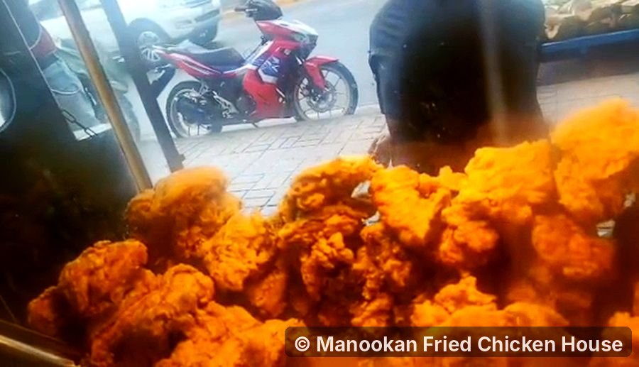

Best Oil for Frying Chicken: 8 Oils Compared
The best oil for frying chicken is a neutral-tasting oil with a smoke point well above 190 °C (375 °F). Refined peanut oil is the classic choice for flavor and stability. Canola, palm, sunflower and rice bran oil are all excellent, cheaper alternatives. Extra virgin olive oil, unrefined coconut oil and butter are the ones to avoid for deep frying.
Below you'll find a side-by-side comparison of eight common oils, what "smoke point" actually means for your chicken, how much oil to use, and how to reuse and dispose of it safely.
I've been frying chicken on Gorordo Avenue in Cebu City since 2024. Oil is the one ingredient that touches every single piece we sell, so it's worth getting right, whether you fry for a stall or for your family.

Quick answer: frying oils compared
Smoke points depend on the brand and how refined the oil is, so treat these as typical figures rather than exact numbers.
| Oil | Approx. smoke point | Flavor | Cost | Verdict |
|---|---|---|---|---|
| Refined peanut | ~230 °C (450 °F) | Neutral, faintly nutty | $$$ | Best overall |
| Canola / rapeseed | ~205–230 °C (400–450 °F) | Neutral | $ | Best budget pick |
| Palm / palm olein | ~230 °C (450 °F) | Neutral | $ | Very stable; common in the Philippines |
| Sunflower (high-oleic) | ~230 °C (450 °F) | Neutral | $$ | Excellent |
| Rice bran | ~230 °C (450 °F) | Light, clean | $$ | Excellent; very crisp results |
| Generic "vegetable oil" (soybean blend) | ~230 °C (450 °F) | Neutral | $ | Good; check the label |
| Refined coconut | ~200 °C (400 °F) | Neutral | $$ | Good |
| Extra virgin olive | ~190–205 °C (375–400 °F) | Strong, peppery | $$$ | Not worth it for deep frying |
What makes a good frying oil?
Three things matter when you're frying chicken. Price matters too, but only after these.
1. A high smoke point
The smoke point is the temperature where oil starts to break down and give off visible smoke. Past that point it tastes acrid, darkens fast and produces irritating fumes. Since crispy fried chicken needs oil between about 160 °C and 190 °C, you want an oil whose smoke point sits comfortably above that range. That leaves room for temperature spikes and for the oil's smoke point to drop as you reuse it.
2. Stability under heat
Smoke point isn't the whole story. Some oils break down faster than others when held at frying temperature for a long time. Oils high in monounsaturated or saturated fat, such as peanut, high-oleic sunflower and palm, tend to hold up better through long frying sessions and repeated use than oils very high in polyunsaturated fat.
3. A neutral taste
Your seasoning should be the star, not the oil. A neutral oil lets the garlic, pepper and salt in your coating come through. Strongly flavored oils, like extra virgin olive or unrefined coconut, carry their taste into the crust.
The 8 oils, one by one
Peanut oil: the classic choice
Refined peanut oil is the traditional oil for Southern US fried chicken and is used by some well-known chicken chains. It has a high smoke point, holds up well to reuse, and gives a clean taste with a hint of richness.
Downsides: it's usually the most expensive option, and the allergy question. Highly refined peanut oil has most of the allergy-causing protein removed, but cold-pressed or "gourmet" peanut oil does not. If you're cooking for guests, tell them you used peanut oil and let anyone with a peanut allergy decide for themselves.
Canola oil: the best budget option
Canola is affordable, neutral and widely available. It's low in saturated fat and works well for home frying. It isn't quite as long-lasting as peanut or palm oil over many reuses, but for a family batch it's hard to beat on value.
Palm oil: the stable workhorse
Palm oil and palm olein, the liquid fraction of palm oil, are among the most common frying oils in Southeast Asia, including much of the cheap "cooking oil" sold in the Philippines. They're very heat-stable and resist breaking down during long frying sessions, which is why food businesses like them.
Downsides: palm oil is high in saturated fat, and its production is linked to deforestation in some regions. If that matters to you, look for oil certified as sustainable (often labeled RSPO).
Sunflower oil: pick high-oleic
Not all sunflower oil is the same. Regular sunflower oil is high in polyunsaturated fat and breaks down faster. High-oleic sunflower oil has been bred to contain mostly monounsaturated fat, which makes it much more stable for frying. Check the label for "high oleic."
Rice bran oil: the crispy secret
Rice bran oil is popular for tempura and karaage in Japan, and you'll find it in many Asian grocery stores. It has a high smoke point, a very clean taste, and many cooks find it gives a lighter, less greasy crust. It costs a little more than canola but less than peanut oil in most markets.
Vegetable oil: read the label
"Vegetable oil" is a catch-all name. In most countries it's mostly soybean oil, sometimes blended with others. It's cheap and neutral, and it works fine for frying chicken. Just check the ingredients, because what's inside varies by brand and country.
Coconut oil: refined only
Coconut oil is everywhere in Filipino kitchens. Refined coconut oil has a neutral taste and fries well. Virgin or unrefined coconut oil has a lower smoke point and a strong coconut flavor, so save it for dishes where you want that taste. Both are very high in saturated fat.
Olive oil: skip it for deep frying
Extra virgin olive oil can technically handle frying temperatures, but its strong flavor and high price make it a poor match for fried chicken, especially when you need a litre or more. Light or refined olive oil is more neutral but still costly. Save your olive oil for salads and finishing.
Oils to avoid
- Butter. The milk solids burn at around 150 °C, well below frying temperature. Clarified butter (ghee) is more heat-tolerant but very expensive in the amounts deep frying needs.
- Unrefined nut and seed oils like toasted sesame, walnut or flaxseed. They have low smoke points and strong flavors. Use them as seasoning oils only.
- Old, dark oil. Any oil past its best will make chicken taste stale and brown it too fast.
What about lard and shortening?
Lard and solid vegetable shortening were the original fats for Southern-style fried chicken, and many cooks still swear by the flavor and crunch. They work well at normal frying temperatures, but their smoke points are lower than most refined oils, so keep a close eye on the thermometer. Lard is high in saturated fat. If you buy shortening, check the label for partially hydrogenated oils, which contain trans fats and are now restricted in many countries.
How much oil do you need?
For deep frying, use enough oil to fully cover the chicken. For shallow frying in a skillet, the oil should come about halfway up the pieces, and you'll turn them once.
| Method | Pot or pan | Oil needed | Pieces per batch |
|---|---|---|---|
| Shallow fry | 30 cm (12 in) skillet | About 1 litre (2–3 cm deep) | 4–5 |
| Deep fry | Heavy 5–6 L pot | About 2–3 litres (6–8 cm deep) | 3–4 |
| Countertop deep fryer | Per manual | Fill to the "max" line | Per basket size |
Safety rule: never fill a pot more than halfway with oil. Chicken makes the oil bubble up hard when it goes in, and an overfilled pot can boil over onto the burner.
More oil holds its temperature better when cold chicken goes in, which is one of the keys to a crisp crust. Our guide to making extra-crispy fried chicken at home covers the exact temperatures and the double-fry method.
How to tell when the oil is ready
- Thermometer (best). (For checking the chicken itself, see our guide to fried chicken internal temperature.) A clip-on deep-fry thermometer or instant-read probe takes the guesswork out. Aim for 160–175 °C (320–350 °F) for frying bone-in chicken.
- Wooden chopstick test. Dip the tip of a dry wooden chopstick or spoon handle into the oil. Steady small bubbles around it mean it's roughly ready. No bubbles means too cold; violent bubbling and smoke means too hot.
- Bread cube test. A small cube of bread should turn golden in about 60 seconds at around 175 °C.
If the oil starts to smoke, turn off the heat and let it cool down. Don't keep frying in smoking oil.
Can you reuse frying oil?
Yes, a few times, if you look after it. Chicken coated in seasoned flour leaves more crumbs and flavor behind than, say, plain fries, so expect fewer reuses than you'd get frying potatoes.
- Let it cool completely in the pot. Never move hot oil.
- Strain it through a fine sieve lined with a paper towel or cheesecloth to remove crumbs. Burnt bits are what make reused oil go bad faster.
- Store it covered in a clean jar or bottle, away from heat and light.
- Label it "chicken" so you don't use it for something sweet later.
When to throw it out
- It has turned dark brown and thick.
- It smells sharp, fishy or rancid.
- It foams heavily when you heat it.
- It starts smoking at normal frying temperature.
How to dispose of used oil safely
Never pour oil down the sink or toilet. It hardens in pipes and causes blockages, and in the drains it adds to the grease that clogs sewers. Instead:
- Let it cool, pour it into a sealable bottle or container, and put it out with your household waste.
- Small amounts can be soaked up with paper towels, sawdust or old newspaper before binning.
- Some cities and businesses collect used cooking oil for recycling into biodiesel. Ask your local barangay or waste collector whether there's a drop-off nearby.
Frying oil FAQ
What oil do fried chicken restaurants use?
It varies. Some US chains have used peanut oil or canola blends, while many restaurants in Southeast Asia use palm olein for its stability and price. Commercial kitchens care most about how long an oil lasts in a busy fryer, which is why stable oils are popular. At Manookan, we're putting together the details of the oil we use and how often we change it, and we'll share them on our process section.
Is peanut oil better than vegetable oil for fried chicken?
Peanut oil is slightly more stable and many people prefer its taste, but in a home kitchen the difference is small. A good canola or vegetable oil at the right temperature will give you crispy chicken for less money.
Can I mix two oils?
Yes. Mixing two neutral, high-smoke-point oils, like canola and peanut, is fine. The blend's smoke point is roughly limited by the lower of the two, so don't stretch a good oil with a low-smoke-point one.
What's the healthiest oil for frying chicken?
Fried chicken is an occasional food whatever oil you use. If you want to lower saturated fat, canola, high-oleic sunflower and rice bran oil are lower in saturated fat than palm or coconut oil. Frying at the right temperature also matters: chicken fried in oil that's too cool absorbs more of it.
Does the oil affect how crispy the chicken gets?
Less than temperature and coating do. Any neutral, high-smoke-point oil will give a crisp crust if it's hot enough and you don't crowd the pot. Fresh oil also browns more evenly than heavily reused oil.
Key takeaways
- Choose a neutral oil with a smoke point well above 190 °C.
- Refined peanut oil is the classic pick; canola, palm, high-oleic sunflower and rice bran are excellent cheaper options.
- Avoid butter, extra virgin olive oil and unrefined coconut oil for deep frying.
- Fill the pot no more than halfway, and use a thermometer.
- Strain and store oil to reuse it a few times; discard it when it darkens, smells off or smokes early.
Got leftovers? Here's how to reheat fried chicken so it stays crispy. Or skip the oil altogether: if you're near Gorordo Avenue, our trays are refilled with fresh batches all day, and every part is ₱25.